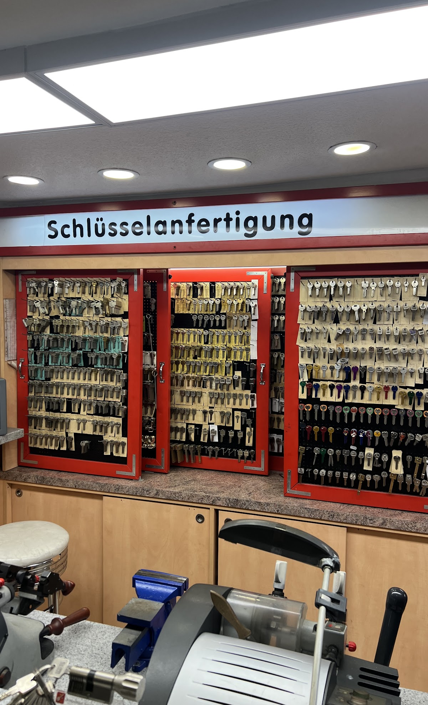
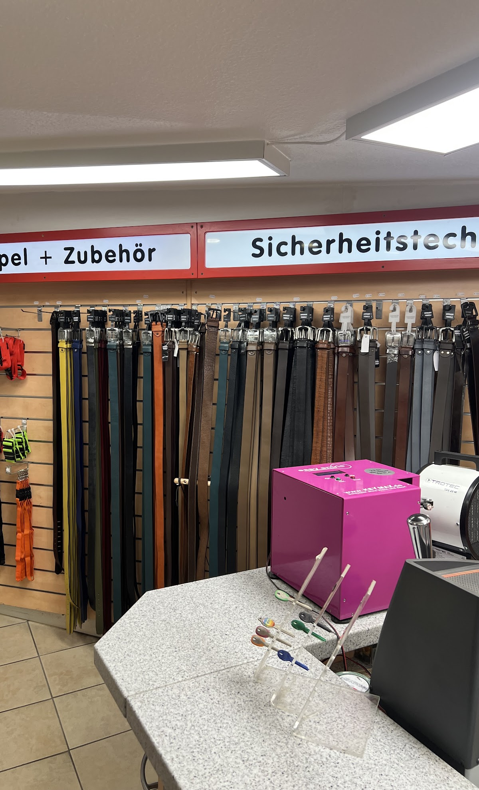
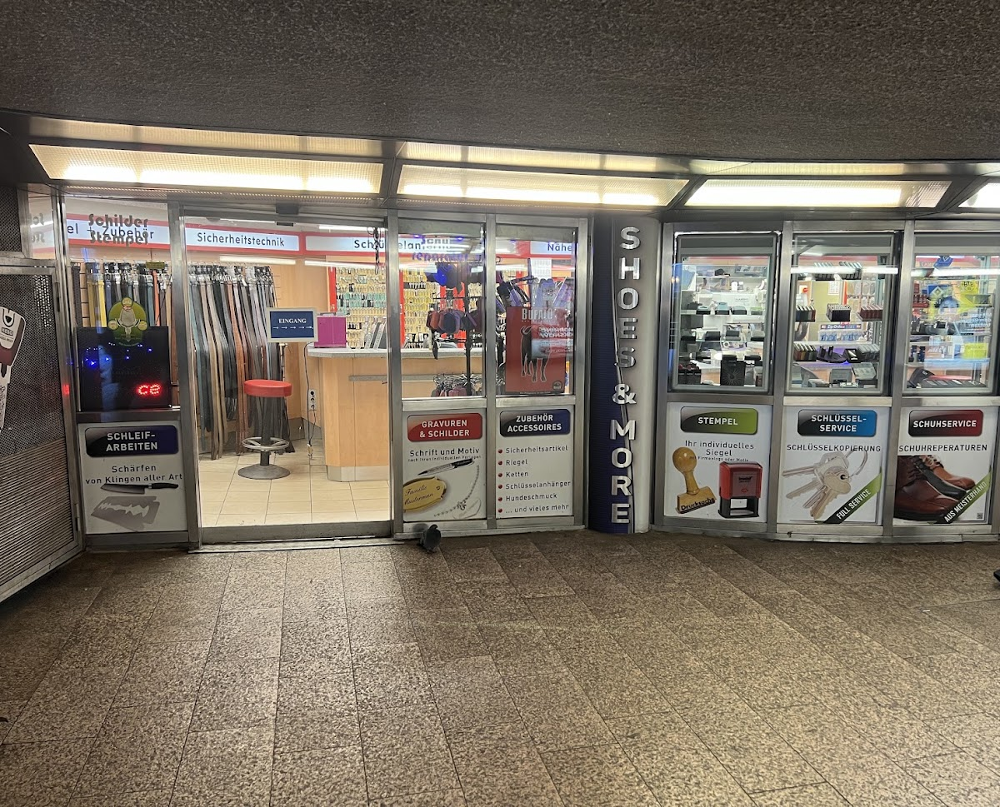

Hauptbahnhof Hamburg · Südsteg, Mönckebergtunnel
Schlüssel kopiert, Schuhe repariert — bevor Ihr Zug einfährt.
Schlüsseldienst, Schuhreparatur, Gravuren, Stempel und Schleifarbeiten — ganz ohne Termin, während die Bahn wartet.

Leistungen
Sechs Handwerke, ein Tresen.
-
01
Schlüsseldienst
Schlüssel kopieren und nachfertigen, Full Service für Haus-, Wohnungs- und Sicherheitsschlüssel, dazu Sicherheitstechnik für Ihre Schließanlage.
-
02
Schuhservice
Schuhreparaturen aus Meisterhand — Absätze, Sohlen und mehr, fachgerecht instand gesetzt statt neu gekauft.
-
03
Gravuren & Schilder
Schrift und Motiv nach Ihren individuellen Vorgaben — für Schilder, Anhänger und persönliche Geschenke.
-
04
Stempel
Ihr individuelles Siegel — Stempel mit Firmenlogo oder Wunschmotiv, angefertigt während Sie warten.
-
05
Zubehör & Accessoires
Gürtel, Sicherheitsartikel, Riegel, Ketten, Schlüsselanhänger und Hundeschmuck — griffbereit im Regal.
-
06
Schleifarbeiten
Schärfen von Klingen aller Art — von der Küchenmesser-Serie bis zur Einzelklinge.
Standort
Mitten im Hauptbahnhof, direkt am Südsteg.
Ebenerdig im Mönckebergtunnel gelegen — zwischen Gleisen und Alltag, keine Wege, kein Umweg.
Hachmannplatz 10aHauptbahnhof Südsteg, Mönckebergtunnel
20099 Hamburg · Etage EG
- Mo – Fr
- 08:00 – 20:00
- Samstag
- 09:00 – 20:00
- Sonntag
- geschlossen
LGBTQ+-freundlich
Einblick
Der Laden im Mönckebergtunnel.

